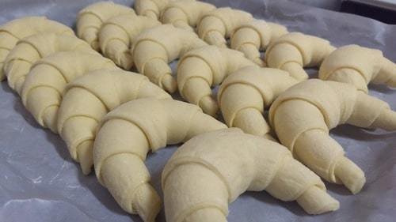
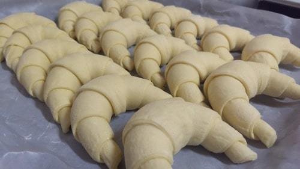

Quienes Somos
Somos una empresa familiar con varios años de experiencia, en el mercado de la panaderia y pasteleria.
Uno de nuestros objetivos es que nuestros productos se puedan elaborar de manera congelada para llegar a nuevos horizontes.
Somos una empresa familiar con varios años de experiencia, en el mercado de la panaderia y pasteleria.
Uno de nuestros objetivos es que nuestros productos se puedan elaborar de manera congelada para llegar a nuevos horizontes.
